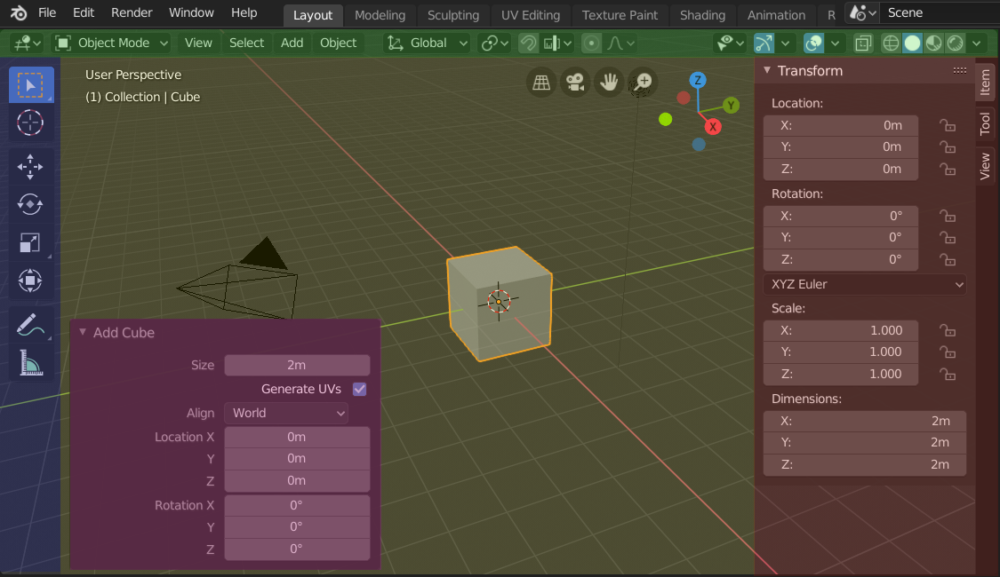
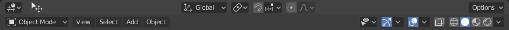
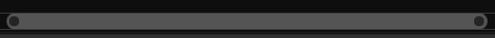
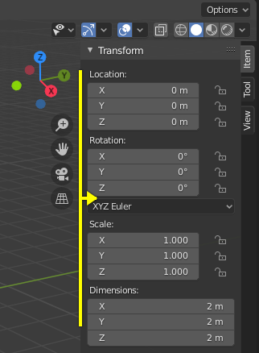
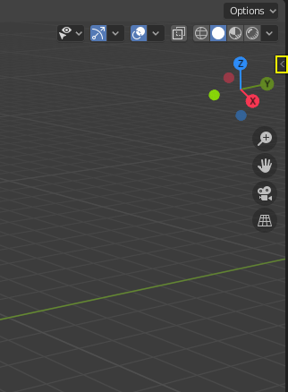
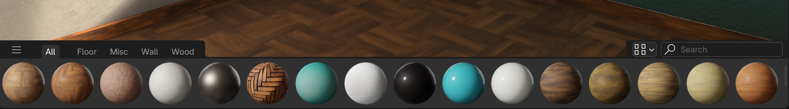
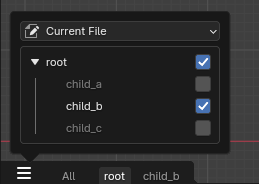
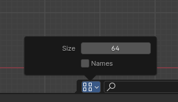

Region¶
Mỗi Editor trong Blender được chia thành các Region. Region có thể chứa các thành phần cấu trúc nhỏ hơn như tab và panel với các nút, điều khiển và widget đặt bên trong chúng.

Các region của 3D Viewport hiển thị Sidebar và panel Adjust Last Operation sau khi thêm một Cube.¶
Header (xanh lục), Main region (vàng), Toolbar (xanh dương), Sidebar (đỏ) và panel Adjust Last Operation (hồng).
Main Region¶
Luôn có ít nhất một region hiển thị. Nó được gọi là Main region và là phần nổi bật nhất của editor.
Mỗi editor có mục đích riêng, nên main region và sự sẵn có của các region bổ sung khác nhau giữa các editor. Xem tài liệu cụ thể về từng editor trong chương Editors.
Header¶
Header là một dải ngang nhỏ, nằm ở trên cùng hoặc dưới cùng của một area. Mọi editor đều có header đóng vai trò là nơi chứa menu và các công cụ thường dùng. Menu và các nút sẽ thay đổi theo kiểu editor, object đang chọn và mode.

Header của 3D Viewport.¶
Toolbar¶
Toolbar (ở bên trái area của editor) chứa một bộ công cụ tương tác. T bật/tắt khả năng hiển thị của Toolbar.
Tool Settings¶
Một dải ngang ở trên cùng hoặc dưới cùng của editor (tương tự header) chứa cài đặt cho công cụ đang chọn. Giống như header, nó có thể bị ẩn và di chuyển qua menu ngữ cảnh của nó.
Adjust Last Operation¶
Adjust Last Operation là một region cho phép tinh chỉnh một operator sau khi chạy nó. Ví dụ, nếu bạn vừa thêm một cube, bạn có thể dùng region này để chỉnh kích thước của nó.
Sắp xếp¶
Cuộn¶
Một region có thể được cuộn dọc và/hoặc ngang bằng cách kéo nó với MMB. Nếu region không có mức thu phóng, nó cũng có thể được cuộn bằng Wheel khi chuột nằm trên nó.
Một số region, đặc biệt là timeline animation, có thanh cuộn với các điểm điều khiển thêm để chỉnh khoảng dọc hoặc ngang của region. Những thanh cuộn đặc biệt này sẽ có thêm widget ở hai đầu, như trong hình sau:

Thanh cuộn với widget thu phóng.¶
Có thể dùng tính năng này để kéo giãn hoặc nén khoảng hiển thị nhằm xem nhiều hoặc ít chi tiết hơn trong không gian màn hình sẵn có. Chỉ cần kéo một trong các chấm để tăng hoặc giảm khoảng hiển thị. Bạn cũng có thể nhanh chóng chỉnh cả khoảng ngang và dọc bằng cách kéo trong editor với Ctrl-MMB.
Đổi kích thước và ẩn Region¶
Đổi kích thước region bằng cách kéo biên của chúng, giống như với Area.
Để ẩn một region, hãy thu nhỏ nó về không. Region bị ẩn để lại một biểu tượng mũi tên nhỏ. Nhấp LMB vào biểu tượng này để region hiện lại.
 |
 |
Co giãn¶
Tỉ lệ của một số region (như Toolbar) có thể được thay đổi bằng cách kéo bên trong chúng với Ctrl-MMB, hoặc dùng NumpadPlus và NumpadMinus khi di con trỏ chuột tới chúng. Nhấn Home để đặt lại tỉ lệ về mặc định.
Asset Shelf¶

Asset Shelf của 3D View, hiển thị các material asset.¶
Search¶
Để tìm asset, di chuột tới Asset Shelf, rồi nhấn Ctrl-F và gõ từ khóa tìm kiếm. Việc này sẽ lọc các pose theo nội dung bạn gõ.
Tab¶

Cách dùng catalog làm tab.¶
Catalog có thể được hiển thị thành từng tab riêng. Mỗi tab sẽ chỉ hiển thị nội dung của nó và nội dung của các mục con. Nhờ đó dễ lọc xuống một bộ asset nhất định.
Tùy chọn hiển thị¶

Các tùy chọn hiển thị khả dụng cho asset shelf.¶
Có thể đổi kích thước các mục trên shelf bằng thuộc tính size.
Bằng cách bật checkbox "Names", tên asset sẽ được hiển thị trong shelf. Ngoài ra cũng có thể di chuột tới một mục để xem tên của nó.
Theo mặc định shelf chỉ có chiều cao cho một hàng mục. Để có thêm hàng, kéo ở cạnh trên của nó để tăng kích thước.
Filter¶
- By Active Tool
Chỉ hiển thị các brush áp dụng được cho công cụ đang hoạt động trong asset shelf.
Ghi chú
Giá trị của thuộc tính này được lưu trong Preferences, và có thể phải lưu thủ công nếu Auto-Save Preferences bị tắt.